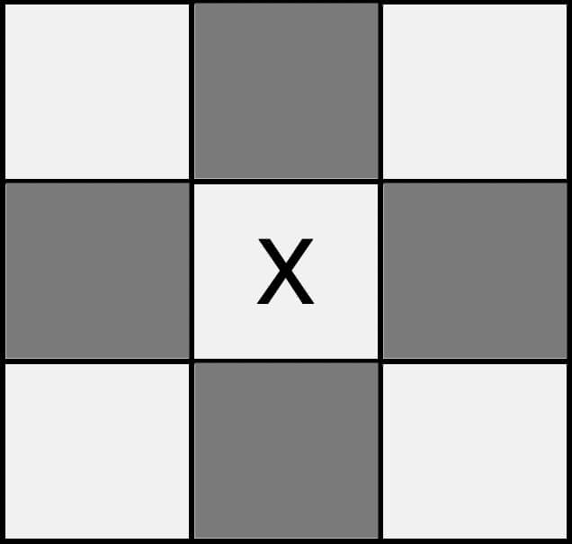
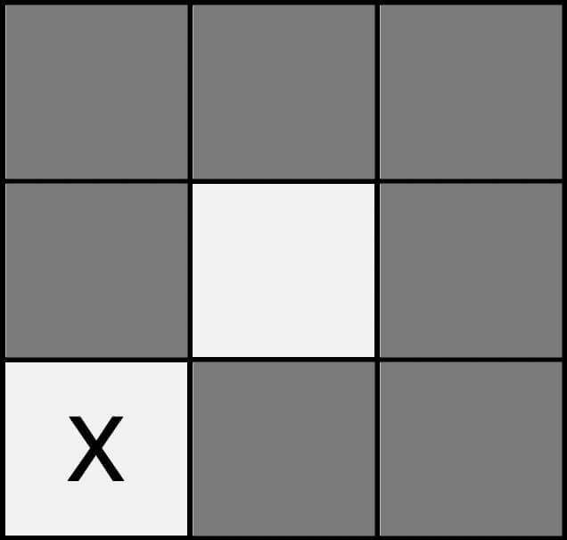

| home | first move | outcomes | data | play |
Due to the fact that the board is a square, there are only 3 main starting positions: middle, corner, and edge
This is most common choice by most tictactoe players because there are more possible rows. however, unless the opponent is chosing squares at random, this is not the best way to rate a starting position.
If the opponent goes in any of the highlighted squares, you can force a win. This gives us 4/8 squares, which isn't the best.
This is, by far, the worst starting position. As far as I'm aware, there is absolutely no way to force a win right off the bat.
And, of course, I saved the best for last. Going in a corner rewards you with a whopping 7/8 chance to win the game. Any move but the center results in a loss for the opponent if played correctly.
